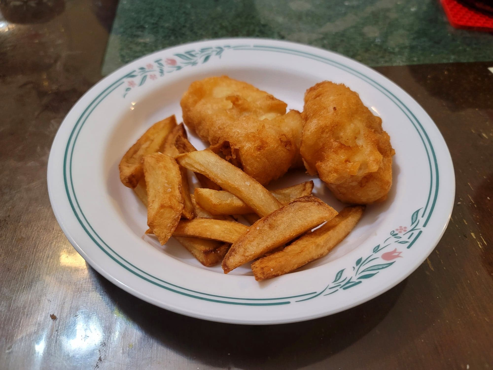

Fish and Chips

Ingredients:
Chips:
- 2 Large potatoes, peeled and cut into large wedges, patted dry
- Salt, to taste
- Oil for deep frying
Fish:
- 1 1/2 lb Cod fillet, cut into long wide strips
- 1 cup (120 g) Flour + more for dredging
- 1 tsp Baking powder
- 1 tsp Salt
- 1 1/4 cup Beer, very cold
- Oil for deep frying
Instructions:
- Heat the oil to 325 degrees Fahrenheit. Optionally, preheat an oven to 200 degrees Fahrenheit to place the fries in after cooking to keep warm. While the oil heats up, keep the potatoes in a bowl of cold water.
- Pat the potatoes very well to dry with paper towels. In batches place the potatoes into the oil and fry for just 2-3 minutes, or until pale and pliable. Then transfer to paper towel lined plates. Let cool completely. Meanwhile, bring the oil to 375 degrees Fahrenheit.
- Place the potatoes back into the oil and fry for a second time. Fry for 2-3 minutes or until golden and crispy. Place onto a baking sheet and sprinkle with salt. Optionally place into the oven to keep warm.
- Bring the oil to between 350 and 375 degrees Fahrenheit. Prepare a plate with flour for dredging. To a separate mixing bowl, add the flour, baking powder, and salt and whisk together. Then whisk in the beer. In batches, quickly pat down cod fillets with paper towels to remove excess moisture. Dredge the fillets in the flour and then dip into the batter to thoroughly coat both sides. Place into the hot oil and fry for about 5-8 minutes or until golden. Then transfer to paper towels to absord excess oil.
- Serve the fish and chips immediately with some tartar sauce or malt vinegar.